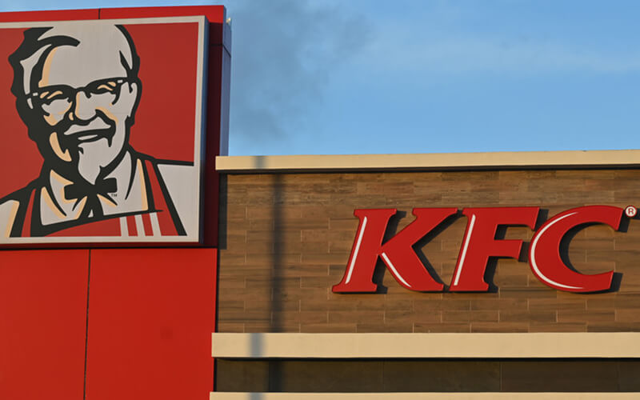
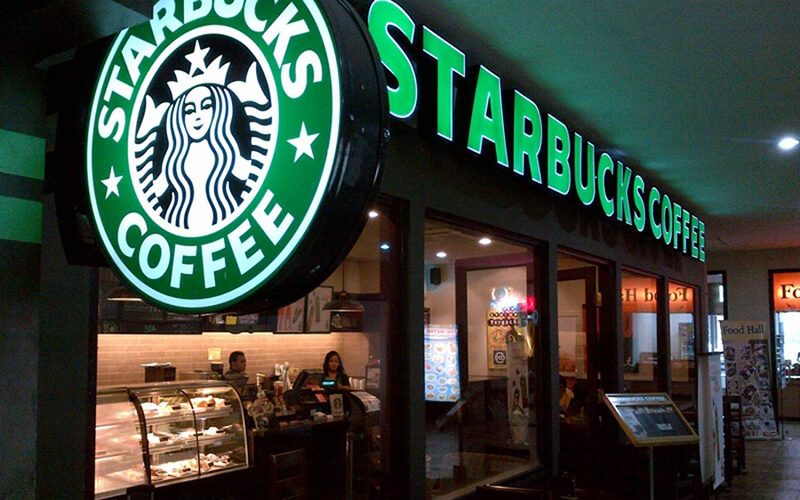

Клиентоориентированность (англ. customer-oriented) – это способность организовывать высококлассное обслуживание клиентов. Это инструмент маркетинга, стратегия, которая работает на увеличение прибыли. От этого показателя напрямую зависит количество новых и постоянных покупателей, а также их лояльность и доверие к фирме. Поэтому каждая успешная компания старается постоянно повышать уровень клиентоориентированности в бизнесе, используя для этого различные инструменты. В данной статье мы разберем виды, основы и преимущества клиентоориентированных компаний.

Что такое клиентоориентированность
Клиентоориентированность — это умение вовремя определить потребности и желания клиентов, чтобы удовлетворить их с максимальной пользой. Можно дать два определения клиентоориентированности, точнее выделить два понятия разных уровней:
- Инструменты, действия, стратегии которые позволяют компании и её сотрудникам выявлять и удовлетворять все желания клиентов с максимальной пользой для них, в пределах их ожиданий.
- Выявление потребности клиента, его проблемы и удовлетворение этих потребностей и решение проблемы с максимальной пользой, превосходя ожидания. Как правило внедряется дополнительная ценность, которая не анонсируется перед продажей.
Клиент всегда прав, если это ваш клиент. Нужно исполнять желания тех, кто четко подпадает под целевую аудиторию> и, вероятно, принесет прибыль в долгосрочной перспективе.
Клиентоориентированная компания – та, что нацелена на долгосрочное сотрудничество. Такая фирма хочет сделать каждого клиента постоянным и еще долго получать прибыль от его покупок. Во главу угла ставится именно клиент: компании необходимо знать потребности своей ЦА, предвосхищать их.
Основные критерии клиентоориентированности:
{kind=link}
- долгосрочное сотрудничество с покупателем;
- лояльное отношение к фирме среди клиентов;
- заказчики или покупатели рекомендуют фирму своим коллегам или знакомым;
- большой выбор персональных предложений, каждое из которых рассчитано на один сегмент целевой аудитории или конкретного постоянного посетителя;
- постоянное, регулярное изучение и перепроверка потребностей клиентов. Основа маркетинга в такой компании выстраивается на интересах клиентов в первую очередь, а не на прибыли. Компания выясняет что нужно покупателям и предоставляет это. Например, компания, которая производит спортивные тренажеры и продает их владельцам фитнес-клубов, узнала, что покупателям важно регулярно проводить техосмотр тренажеров. Как только продавец ввел дополнительную бесплатную услугу – выезд техника для осмотра – лояльность покупателей повысилась в несколько раз и продажи начались;
- обратная связь. Чтобы усовершенствовать старое и создать что-то новое, продавец должен знать, что именно не понравилось клиентам. Важно, чтобы покупатель не просто отправлял свое мнение, но и получал ответ от сотрудников компании;
- корректное, вежливое общение с клиентом и внимательность к его проблеме. Как известно из маркетинга, не всегда потенциальный покупатель обращается к продавцу, чтобы купить товар. Иногда он хочет получить больше информации, иногда приходит с неосознанными желанием «закрыть» свои возражения и получить дополнительную рекламу. Сотруднику фирмы важно угадать пожелания гостя и дать ему необходимое;
- поддержка корпоративной культуры, стимулирование сотрудников на работу.
Все эти критерии дополняются еще одним – компания постоянно анализирует свою работу и общение с клиентами. Благодаря аналитике продавец знает, какие инструменты клиентоориентированности именно для него наиболее эффективны.
Если кратко, то можно выделить 4 пункта, которые характеризуют клиентоориентированную компанию:
- Учет, удовлетворение всех потребностей целевой аудитории и каждого заинтересованного человека индивидуально.
- Приумножение капитала, расширение клиентской базы благодаря пониманию и удовлетворению основных потребностей клиента.
- Завлечение новых покупателей, повышение лояльности старых, путем использования различных инструментов.
- Умение предприятия заранее предугадывать желания клиента.
Преимущества клиентоориентированного бизнеса
{kind=link}
Выделим 11 основных преимуществ, которые получит каждая клиентоориентированная компания. Основные достоинства:
- Получение новых клиентов за счет сарафанного радио, рекомендаций и отзывов. Довольные люди будут рекомендовать вас, что позволит экономить на закупке рекламы, маркетинге.
- Приобретение постоянных клиентов. Заказчик вернется снова, если он остался доволен сделкой.
- Получение максимальной лояльности. Сохранение лояльности постоянных потребителей даже при повышении цен.
- Дает отличные конкурентные преимущества и отстранение от них. Клиентоориентированность помогает отделиться от основных своих конкурентов и снизить зависимость от цен. Это предотвращает демпинг.
- Повышает ценность бренда и компании. Довольные клиенты станут постоянными, это создаст прочный фундамент для развития и расширения бизнеса, маркетинга.
- Укрепляет положение на рынке и в нише. Это происходит за счет снижения расходов на рекламу и лояльности клиентов.
- Сокращается отток клиентской базы, потому как они довольны.
- Увеличиваются повторные обращения и меньше значения придают стоимости.
- Упрощается процесс продаж, клиенты готовы идти вам навстречу.
- Повышение объема продаж и среднего чека. Лояльные потребители уже доверяют вам, поэтому заказ будут делать больше.
- Снижения количества жалоб и негативных отзывов, которые портят репутацию.
Минус клиентоориентированного бизнеса один — это долгая разработка маркетинг стратегии, которая требует пересмотра всех бизнес-процессов и тщательной подготовки стратегии развития на рынке.
Виды клиентоориентированности
Внешняя клиентоориентированность предполагает формирование и поддержание отношений с внешними клиентами, а внутренняя с внутренними, то есть с сотрудниками.
{kind=link}
Клиентоориентированность сотрудника (внутренняя)
С клиентом общается менеджер — и от него в первую очередь зависит результат взаимоотношений с потребителем. Поэтому очень важно не пренебрегать внутренней клиентоориентированностью: премии, корпоративы, похвала. Показателем ориентированности сотрудника на клиента является то, что он выполняет предписания, разработанные компанией, для эффективного общения с потребителями продукции. Сам работник также должен понимать, что приоритетом для него являются запросы клиента, которые порой могут стоять выше корпоративных интересов. Здесь очень тонкая грань, опытный сотрудник её выдерживает.
В клиентоориентированность сотрудника входят:
{kind=link}
- Доброжелательность.
- Коммуникабельность.
- Позитивный настрой.
- Хорошее знание продукта.
- Понимание, чего хочет потребитель.
- Понимание и принятие мнения покупателя.
- Внимание к деталям.
- Предвосхищение желаний потребителя.
- Умение получать удовольствие, помогая.
- Соблюдение регламентов компании.
- Умение поставить себя на место покупателя.
- Способность сохранять баланс между интересами компании, клиента и собственными мыслями.
У клиентоориентированного персонала всегда есть база лояльных клиентов, кейсы. Также они быстрее выполняют планы продаж. Но будьте готовы к тому, что такие люди очень высоко ценятся на рынке труда.
Клиентоориентированность компании (внешняя)
Если вы уже нашли идеальных сотрудников, вся компания должна соответствовать правилам. Приоритетным направлением развития бренда считаются отношения с клиентами, соответствие их ожиданиям.
Основные правила компании:
{kind=link}
- Бренд интересуется, как клиент оценивает продукт и сервис, собирает эти данные и на их основе оптимизирует бизнес-процессы.
- Компания понимает взаимосвязь положительного клиентского опыта и частоту покупок.
- Внутри компании высоко развита корпоративная культура, а также разработаны стандарты обслуживания клиентов: скрипты, регламенты и руководства. Например, такие мелочи, как подавать чашку с чаем.
- Длительные отношения с покупателями, долгосрочное сотрудничество с лояльными клиентами высоко ценятся.
- Рекомендации вашего бренда другим потребителям со стороны имеющихся заказчиков, покупателей.
- Систематическое изучение предпочтений потребителей. Основа маркетинга в такой компании выстраивается на интересах клиентов в первую очередь. Простой алгоритм: определите, чего хотят ваши заказчики больше всего и предоставьте им это.
- Внедрение в работу «правил трёх да». Часто на практике реализовать такой подход не просто, но к этому нужно стремиться. Создавая положительный образ приятных собеседников, вы повышаете лояльность покупателей. Однако важно в словах не расходится с делами. Клиентоориентированность – не про обещания, а про гарантии, что реально сможете сделать.
- Есть главные принципы общения с заказчиками и корпоративная культура – это вежливость и внимание к проблеме. Клиентоориентированность начинается с того, что продавец внимательно выслушивает пожелания покупателя, не перебивая, и предлагает оптимальное решение.
- Проводится аналитика деятельности фирмы. Это позволит выявить эффективные действия и отказаться от малопродуктивных мероприятий.
- Компания и бизнес развивается, заимствует хорошие идеи у конкурентов, лидеров в других отраслях рынка.
Принципы клиентоориентированности
Разберем 5 ключевых принципов клиентоориентированности:
- Добросовестность. Клиенты оценят честность, порядочность компании-продавца.
- Знание потребностей своего клиента. Изучите каждый сегмент своей целевой аудитории и проработайте каждое возражение.
- Умение понять и принять точку зрения, проявите гибкость. Клиентов подкупает, когда сотрудник искренне заинтересован в их проблеме и старается решить ее, а не продать что-то.
- Внимание к мелочам. Это важно, чтобы вовремя заметить потребности клиента или раздражающие его факторы
- Умение превосходить ожидания покупателя. Давать клиентам чуть больше, чем они ожидают. Если он совершил покупку, можно вручить небольшой подарок или скидку на следующий заказ.
Остальные принципы и правила можно разделить на две категории:
- Понимание клиента. Чтобы любому потребителю было комфортно сотрудничать с компанией, важно понимать свою целевую аудиторию. В этом поможет выполнение следующих пунктов:
- Анализ аудитории. Используются разные методы сбора и анализа данных. Среди них не последнее место занимают соцопросы, тестирования.
- Деление целевой аудитории на сегменты. Группировать потребителей можно по возрасту, социальному статусу и т. д.
- Предоставление индивидуальных предложений.
- Проектирование результата взаимодействия между клиентом, компанией.
- Персонализированный подход заставит думать каждого, что фирма заботится о нем, подстраивается под его личные требования.
- Забота о клиенте. Она выражается по-разному:
- Внутренние, внешние точки контакта. Подразумевается возможность общения клиента с представителями организации на онлайн-площадках и лично (по телефону или вживую).
- Знание своих потребителей «в лицо». Персонал узнает покупателя, обращаются к нему по имени, помнят, какой продукт обычно он покупает.
- Гибкие сотрудники. Речь идет о персонале, который умеет подстраиваться под посетителей, предугадывать, удовлетворять их потребности.
- Продолжение взаимодействия с человеком после совершения покупки. Компания предлагает дополнительные услуги, систему лояльности, сообщает о скидках, акциях.
- Просмотр и реакция на комментарии покупателей. Руководители должны реагировать на обратную связь.
- Мотивированные сотрудники. Важно повышать уровень внутренней клиентоориентированности.
- Работа с негативом. Умение обрабатывать претензии очень важно — если человек негодует, нужно его успокоить, постараться выяснить причины недовольства и нивелировать контакт.
Сотрудник должен работать в комфортных условиях, знать политику, правила. Главное, мотивация персонала должна основываться не на премиях, страхах, увольнениях, а на любви к своему делу, высокой лояльности к компании. Управление процессом должно быть грамотным, как это организовать для своего бизнеса с минимумом времени, разберем ниже в статье.
7 мифов о клиентоориентированности

Частые предрассудки относительно значения термина клиентоориентированность:
- Ориентация на покупателя — это дорого. Все траты должны иметь экономическое обоснование, то есть не нужно улучшать сервис себе в убыток — это глупо.
- Слепое удовлетворение любого каприза клиента. У вас должно быть четко прописано что допустимо, а что нет. Стоит целесообразно подходить в ресурсам.
- Клиент всегда прав. Клиент прав всегда, когда это выгодно компании. Иначе невозможно, стоит соблюдать баланс и ставить интересы финансовых показателей на первое место.
- Главное создать программу лояльности и заманивать большими скидками. Это не всегда действенно, и точно не едино правильный вариант. Вам нужно улучшать сервис, а не жертвовать прибылью.
- Необходимость везде указывать: что компания является клиентоориентированной организацией. Это не поможет, нужно в первую очередь предпринимать реальные действия, чтобы клиенты и правда чувствовали заботу и понимание.
- Хорошего сервиса достаточно для успеха. Это не совсем так, если продукт некачественный, то сервис и внимательные менеджеры не спасут ситуацию. Заниматься следует всем вместе.
- Важна бесплатная доставка товаров. Это совсем не обязательно, важна скорость и качество доставки. Клиентоориентированность — это не про «дешево», это про «качественно и с заботой».
Как проверить компанию на клиентоориентированность
{kind=link}
Уровень 1. Компания развивающая «качественный сервис»
Предприятие только начинает свое движение в этом направлении. Происходит формирование клиентоориентированности, которое должно пройти все фазы. Не нужно пытаться сделать все и сразу. Важно поэтапно менять модель работы, совершенствовать обучение персонала, внедряя новый подход в ДНК фирмы. Критерии, которые свидетельствуют о том, что компании на этом уровне:
- Продукт. На данном уровне сильных изменений над продуктом не будет. Главное — определиться с направлением, можно провести опросы пользователей, чтобы понять предпочтения и собрать данные. Важно разобраться с финансированием для дальнейших действий бизнеса.
- Реклама. На данном этапе не следует уделять рекламе много времени, важно определиться со стратегией продвижения бизнеса на будущее.
- Сайт. Ресурсом легко и удобно пользоваться, на сайте легко можно найти контакты для связи.
- Общение (Поддержка). Заметное улучшение качества обслуживания, сотрудники обучаются и все лучшие работают с клиентами. При его серьезном росте кажется, что и сам продукт, который предлагает компания, стал лучше.
- Логистика. Быстрая доставка, можно отправить оповещение об отправке.
К этим пунктам можно добавить здоровые отношения внутри фирмы. Это отношения, в которых каждый сотрудник просто понимает свою функцию и ведет предприятие к росту, не пытаясь продемонстрировать свое превосходство и вставляя другим палки в колеса.
Уровень 2. Компания на уровне профессионального сервиса
- Продукт. Соответствует требованиям, его создают, опираясь на исследования потребностей и желаний потенциальный клиентов. Материалы — безопасные и экологичные.
- Реклама. Ориентирована на ЦА, важно подчеркнуть проблемы или ценности человека, реклама должна зацепить.
- Сайт. Приятный и интуитивно понятный дизайн сайта, легко найти контакты и можно купить в один клик. Есть полезные разделы сайта с текстами (блог) или FAQ (вопрос-ответ)
- Общение (Поддержка). Обучение персонала уже налажено, они понимают клиента и знают как себя вести. Оперативно отвечают, можно связаться несколькими способами с поддержкой.
- Логистика. Если товар задерживают — начисляются бонусы, есть отслеживание товара.
Здесь просто следует грамотно выстроить дальнейшую стратегию действий бизнеса и озаботиться созданием профессионалов. От них и будет зависеть успех всего бизнеса на рынке.
Уровень 3. Компания как «центр обслуживания клиентов»
- Продукт. Создан на основе анализа потребностей и интересов клиента, предвосхищает ожидания.
- Реклама. Разработана четко под целевую аудиторию, реклама отражает ценности компании и позиционирование.
- Сайт. Удобное юзабилити, учтивая поддержка сайта и быстрые ответы, заполненный блог.
- Общение (Поддержка). Консультанты общаются на языке клиента, знают все тонкости воздействия и умеют заботиться. Позитив и доброжелательность продавцов. Есть четкий регламент взаимодействия, быстрый ответ на звонок.
- Логистика. Можно отследить передвижение товара в режиме реального времени, сотрудник сообщает об отправке. Всегда можно связаться с менеджером для помощи с отслеживанием товара.
На данном этапе уже учитываются все принципы клиентоориентированности, о которых написано выше в статье. Важно не только грамотно их внедрить, но и автоматизировать процесс, наладить бесперебойное взаимодействие с клиентами.
18 примеров реализации принципов клиентоориентированности
Рассмотрим примеры клиентоориентированности компаний на разных сферах деятельности.
Магазины
- Интернет-магазин по продаже обуви Zappos удовлетворенность клиентов стоит превыше прибыли или времени ответа на вопросы. К тому же, в компании Zappos не нужно спрашивать разрешения менеджера, чтобы удивить клиента. Поэтому 75% покупок — повторные заказы.
- В ювелирных бутиках Cartier по всему миру можно поговорить с консультантами на своем родном языке. Если такой возможности нет — вам предоставят бесплатного переводчика.
- Lamoda — онлайн-магазин по продаже одежды, аксессуаров и товаров для дома. Компания ведет технологический блог на Habr.com, развивает интернет-магазин и мобильное приложение на основе данных исследований целевой аудитории. Предлагает скидки и акции постоянным клиентам.
Банки
- «Альфа-Банк». Для удобства клиентов в зимний период металлические ручки на дверях отделений «одели» в мягкие и приятные чехлы. Благодаря этому людям было приятнее заходить в банк в морозные дни.
- «Сбербанк» России организовал детские уголки с удобной мебелью и карандашами во всех своих отделениях.
- Тинькофф — первый банк без отделений в России с 14 млн клиентов, третий крупнейший банк страны по количеству пользователей. Его программа лояльности, к примеру, включает круглосуточную поддержку, бесплатные калькуляторы и т.д.
Медицина
- МЕДСИ — федеральная сеть из 31 клиники в Московской области и 16 в регионах. Компания предоставляет все медицинские услуги: от консультаций до хирургии. Обеспечивает клиентам полноценную онлайн помощь через приложение SmartMed, что не тратит времени на дорогу, также есть Премиум ведение от лучших врачей, бонусы и персональные предложения.
- «Мастерская Здоровья» сейчас сеть, которая включает 4 лечебных отделения и 1 диагностический центр. К клиенту приставлен консультант, который помогает ему во всех вопросах от данных и напоминания о визите к врачу до поднятия настроения.
Рестораны
- KFC — международный ресторанный холдинг, реализовал 50 благотворительных проектов на территории стран СНГ. Внутренняя клиентоориентированность компании включает запуск программы временного трудоустройства для партнеров компании во время коронавируса, а также университет для сотрудников — факультеты корпоративной культуры, функционального образования, развития лидерства.

- В кофейне Starbucks на каждом стаканчике пишут имя человека, которому он предназначается. Так персонал запоминает покупателя, а каждый посетитель получает именной стаканчик.

- Ресторан «Пицца» в Италии пользуется популярностью у туристов и, чтобы попасть в него в туристический сезон, придется простоять в длинной очереди. Для комфортного ожидания клиентам предлагают прохладную воду и стулья бесплатно.
- McDonald's известен тем, что прислушивается к потребителям и реагирует соответствующим образом. К примеру, сеть ресторанов представила «Завтрак на весь день» в 2015 году после того, как отзывы в социальных сетях и онлайн-опросы показали, что существует широкий интерес к возможности заказывать продукты для завтрака в течение всего дня.
Разные сферы
- Logitech – производитель комплектующих для компьютеров. Компания увеличила срок, в который возможен ремонт по гарантии, до 3 лет. Если у клиента ломается товар, то его бесплатно меняют на такую же модель.
- Правило 2000$ от The Ritz-Carlton. В сети гостиниц Ritz придумали интересный аспект обслуживания. Руководство дало своим сотрудникам возможность тратить до 2000 долларов на решение проблемы гостя без согласования этого с менеджером.
- Интернет-провайдер «Дом.ру». Мастер по установке подключения к сети после завершения работы предлагает сделать что-то по дому. Разумеется, такой подход вызывает исключительно приятные впечатления у клиентов.
- Интернет-магазин матрасов, кроватей и постельного белья Casper создал чат-бота для людей, страдающих бессонницей. Он активен с одиннадцати часов вечера и до пяти утра. Суть проста: пока все ваши друзья и близкие спят, бот Insomnobot-3000 составит вам компанию. Вы можете поговорить с ним о чем угодно. Взамен бренд собирал контактную информацию и отправлял рассылки. Благодаря подобному помощнику, у компании появился лояльный сегмент аудитории.
- Центр детского развития. Пока ребятишки заняты своими делами с преподавателями, администраторы предлагают какие-то развлечения родителям – к примеру, планшет с интернетом, фильмами и играми, напитки и т. п.
- Яндекс Деньги отказался снимать комиссию за транзакции между владельцами электронных кошельков, установленных в гаджетах. Компания пошла навстречу клиентам, но и показала, что приоритетным является развитие именно мобильного направления сервиса. Это пример того, как клиентоориентированность помогает «пересадить» новых пользователей сервиса на мобильную версию.
Оценка эффективности клиентоориентированности
Оценка производится разными способами:
- Проведение опросов, результаты которого дают оценку уровня клиентоориентированности фирмы. Обязательно рассматриваются отзывы и предложения посетителей. Опросы рекомендуется проводить каждый месяц для сбора данных.
- Организация фокус-групп, которые оценивают качество обслуживания. В такой круг людей должны входить не только клиенты, но и руководители и персонал компании. Формирование групп должно происходить минимум раз в год.
- Приглашение внешних специалистов для проведения анализа среди сотрудников фирмы. По итогу консультанты могут порекомендовать персоналу новый инструмент и подход для повышения клиентоориентированности.
Вопросы для проверки:
- Как сотрудник общается с клиентом?
- Помог ли менеджер решить проблему потребителя? Что он предложил?
- Как реагировал клиент? Не было ли негативных эмоций?
- Как пользователь может связаться с вами?
- Корректно ли работают каналы коммуникации?
- Клиент вовремя получил товар?
- Остался ли покупатель доволен после получения продукта и завершения продажи?
- Оставил ли клиент отзыв? Положительный или отрицательный?
- Были ли проработаны негативные комментарии? Какие решения были предложены?
- Как была проведена работа с возвратами?
- Были ли предложены бонусы для удержания клиента?
Как рассчитать степень лояльности
Расчет индекса поможет провести NPS (Net Promoter Score), который демонстрирует степень лояльность
покупателей бренду. Чтобы рассчитать индекс, необходимо получить от клиентов ответ на вопрос, насколько они готовы рекомендовать компанию знакомым по шкале от 0 до 10, где 0 — «не готов рекомендовать», 10 — «рекомендую». Этот опрос можно внедрить в статью блога на сайте или, если блога нет, разослать СМС, в мессенджеры.
Полученные ответы делятся на три группы:
- сторонники бренда, 9–10 баллов;
- 2 нейтральные клиенты, 7–8 баллов;
- 3 критики, 0–6 баллов.
Индекс NPS представляет собой разницу между сторонниками компании и ее критиками в процентах. Итоговое значение варьируется от −100 % до +100 %.
Как читать индекс NPS
- 50 % и более — клиентский сервис компании на высоком уровне, лояльность потребителей увеличивается естественным образом;
- от 30 % до 50 % — средний показатель, важно развивать клиентский сервис;
- менее 30 % — низкий уровень лояльности, требуется пересмотр подхода к работе с покупателями.
Оценка клиентоориентированности происходит по двум направлениям: сотрудников и компании.
Внедрение принципов клиентоориентированности
Можно выделить конкретные шаги, которые должна выполнить каждая компания:
{kind=link}
- повысить удовлетворенность клиента за счет введения дисконтных программ, бонусных систем или акций. Это поможет продажам;
- проводить опросы, чтобы проанализировать недочеты;
- на практике показать клиенту, что к его замечаниям прислушиваются;
- поддерживать контакты с покупателями даже после продажи – общаться с ними по телефону, вживую или через Интернет, email. Отправлять поздравительные письма, оповещать об акциях, дарить скидки;
- проводить образовательные и развлекательные мероприятия и специальные клиентские дни;
- прописать для сотрудников корпоративные стандарты этикета – базовые скрипты, по которым будет проходить работа и общение с целевой аудиторией;
- разделить сотрудников на две группы – одна часть работает с постоянными покупателями, а вторая привлекает новых лидов. Для привлечения используются разные методы.
Клиентоориентированные продажи
В данном разделе речь пойдет о внутренней клиентоориентированности в продажах. Она означает заботу о работнике компании. Для определения потребностей внутреннего клиента необходимо:
- Иметь полную информацию о работниках (образование, квалификация, стаж)
- Регулярно проводить аттестацию, анонимное анкетирование и опрос сотрудников
- Наблюдать за работой персонала
- Регулярно проводить обучающие тренинги, курсы по работе с клиентами, рассказывать популярные финансовые приемы
- Внедрять корпоративные объединяющие мероприятия для построения взаимоотношений в команде и бизнесе, отделе.
Также следует проводить анкетирование сотрудников, чтобы выявить слабые места:
- удовлетворенность работой – недовольства работников, наиболее частые причины увольнений;
- знание сотрудниками миссии и задач компании;
- знания о товарах или услугах, сфере их применения, преимуществах каждого отдельного продукта.
Обработка данных поможет в поиске маркетинговых слабостей коллектива, которые сложно исправить. Подробнее об этой части опросов и разборе показателей, как работают виды клиентоориентированности на рынке, ниже в статье.
Клиентоориентированный маркетинг
Клиентоориентированный подход в маркетинге включает следующие главные постулаты:
- Желание помочь клиентам совершить полезную покупку.
- Помощь клиентам в оценке их потребностей.
- Предложение только тех услуг и продуктов, которые удовлетворят эти потребности.
- Точное описание продуктов бизнеса.
- Адаптация торговых презентаций под интересы клиентов.
- Отказ от тактики обманного или манипулятивного влияния, давления на покупателя.
- Клиентоориентированное мышление, которое подразумевает необходимость сосредоточить все внимание на потребностях клиента.
- Клиентоориентированное поведение. Создание комфортных условий покупателю.
Клиентоориентированность для услуг
В услугах первостепенны параметры:
- Отношение к людям
- Делать то что нравится клиентам, а не только вам
- Качество
- Устранять замечания.
- Верить в свой продукт
- Делать все вовремя
Клиентоориентированная компания по шкале SOCO
Компания Saxe and Weitz провела исследование клиентоориентированности, где приводится шкала, которую можно использовать для определения степени клиентоориентированности каждого сотрудника, оценить как он работает.
Шкала SOCO — самая известная метрика для оценки клиентоориентированности. Расшифровывается она как Selling Orientation-Customer Orientation, ориентация на продажу — клиентоориентированность.
В шкале 12 «положительных» клиентоориентированных утверждения сочетаются с 12-ю «отрицательными». Примеры парных взаимоисключающих утверждений из опросника:
- «Я стараюсь помочь клиентам в достижении их целей» — «Я пытаюсь достичь своих целей, удовлетворяя клиентов».
- «Я стараюсь влиять на покупателя информацией, а не давлением» — «При описании продукта покупателю необходимо преувеличивать».
- «Я готов не соглашаться с клиентом, чтобы помочь ему принять лучшее решение» — «Даже если я не уверен, что продукт подходит покупателю, я все равно буду стараться заставить его совершить покупку».
Каждое из них оценивается по шкале от 1 до 9 — со значениями «никогда», «редко» или «всегда». Это позволяет оценить работу каждого сотрудника по шкале SOCO и проверить этот показатель по компании в целом.
Клиентоориентированность глазами клиента
По мнению большинства людей, определенные фирмы привлекают их по нескольким причинам:
{kind=link}
- Возможность написать практически любым удобным образом — обращались через чат на сайте, Facebook и «ВКонтакте»
- Быстрый ответ и извинения, если быстро ответить не удалось
- Живое общение человека с человеком без напускной деловитости
- Отсутствие шаблонных ответов
- Использование эмоций в текстовых каналах (смайлики)
- Открытое общение без тени раздражения при личном контакте
- Общее ощущение, что все представители банка рады общаться с клиентом и помочь.
25 способов увеличения показателя клиентоориентированности
Советы по росту клиентоориентированности:
- Мотивируйте клиентов программой лояльности. Например, персональные предложения, систему скидочных карт и т.д. — это поможет удерживать постояльцев.
- Используйте CRM, система хранит информацию по каждому клиенту, вы сможете делать персональные предложения;
- Придумайте несколько сценариев для типовых ситуаций: продажа сопутствующих товаров, возврат купленных продуктов или возмущение стоимостью товара.
- Посмотрите, как конкуренты работают с клиентами, и позаимствуйте хорошие идеи.
- Проводите тренинги, опросы и аттестацию работы сотрудников: вы поймете, что стоит улучшить в компании и повысите качество обслуживания покупателей. Обучайте персонал, введите чек-лист.
- Проанализировать продукцию с точки зрения дизайна, упаковки и т.д.
- Выберите канал общения с аудиторией.
- Мотивируйте сотрудников на работу — премиями/бонусами. Поддерживайте положительный настрой в течение всего дня, проводите корпоративы, начисляйте бонусы за креативные решения.
- Следите за качеством сервиса и поддержанием личностного взаимодействия с каждым посетителем.
- Продумывайте акции, бонусные карты, системы лояльности и другие решения.
- Развивайте культуру внутри коллектива, не допускайте ссор и конфликтов.
- Пишите слово Клиент с большой буквы и обращайтесь по имени.
- Создавайте доброжелательную атмосферу, дарите улыбки. Важна вежливость, хорошие манеры, культурная речь всех членов команды.
- Посчитайте стоимость клиента. В каждом следует увидеть большую стоимость, чем разовая покупка. Чем больше эта стоимость, тем ценнее он для бизнеса.
- Используйте систему тайный покупатель или тайный сотрудник.
- Проявляйте заботу о клиентах, в том числе и мелочах.
- Слушайте клиентов. Проведите customer development интервью — пообщайтесь с целевой аудиторией, чтобы получить инсайты для улучшения продукта. Регулярно мониторьте обратную связь, которая поступает из разных источников: отзывы, общение с поддержкой, упоминания бренда в соцсетях.
- Оптимизируйте сайт. Например, если устранить ошибки на странице сайта, ее конверсия может увеличиться.
- Определите ваши стандарты. Чтобы оправдывать ожидания клиентов и вести конструктивный диалог с сотрудниками, следует зафиксировать стандарты.
- Стоит сделать так, чтобы клиент вернулся и стал постоянным потребителем продукта компании. Постоянно работайте над повышением качества обслуживания.
- Не давайте обещаний, которые не будут исполнены и стремитесь к тому, чтобы на просьбу клиента всегда был положительный ответ.
- Не стоит тратиться на содержание контроллеров, которые будут следить за работой сотрудников. Клиентоориентированная компания должна обеспечить то, что каждый специалист будет самостоятельно себя контролировать в работе с покупателем.
- Правильно реагируйте на критику. Не стоит кричать, демонстрировать злость и спорить с клиентом. Максимально постарайтесь проявить заинтересованность, вникнуть в суть проблемы и решить ее.
- Реагируйте на жалобы, при необходимости устраняйте недостатки бизнеса и извиняйтесь перед клиентами.
- Изучите путь клиента. Это поможет найти ошибки, с которыми сталкивается пользователь, и исправить их.
Книги о клиентоориентированности
{kind=link}
Список книг:
- «Клиенты на всю жизнь», автор Карл Сьюэлл и Пол Браун.
- «Правила Zappos. Технологии выдающейся интернет-компании», Джозеф Мичелли.
- «Искренняя лояльность», Фред Райхельд и Роб Марки.
- «Превосходя ожидания», Рик Баррера.
- «Первоклассный сервис как конкурентное преимущество», Джон Шоул.
- «Как завоевать клиента», Нейл и Мюррей Рафел.
- «Фирмы, несущие любовь», Рэй Сисодиа, Джаг Шет, Девид Вольф.
- «Клиентология», Филип Грейвс.
- «Выдающийся сервис, отличная прибыль», Леонардо Ингильери и Мика Соломон.
- «Точки контакта», Игорь Манн и Дмитрий Турусин.
Клиенты — это фундамент вашего бизнеса. Из этих книг вы узнаете о том, как сделать обслуживание выдающимся, а взаимоотношения с клиентами долговечными. Эти книги помогут понять, чего клиенты хотят, а чего не хотят и почему. Знайте своих клиентов, превосходите их ожидания, и они будут возвращаться к вам снова и снова.
Что нельзя делать
Выше в статье мы разобрали виды и шаги, по которым вы не тратя много времени сможете просто достичь успеха. А теперь,главно, что при общении с покупателем нельзя:
- Не соглашаться с правилами компании, игнорировать уставы бизнеса. Представитель — лицо компании, поэтому важно, чтобы он отображал ее суть.
- Игнорировать вопросы клиента, не слушать и не учитывать его конкретный запрос. Если клиент не получит от вас ответа — ответит конкурент.
- Предоставлять ложную или непроверенную информацию о продукции. Все равно покупатель узнает правду, а ложь повлечет за собой последствия.
- Провоцировать конфликты, демонстрировать агрессию, грубо отвечать. Вежливость и доброжелательность — основа успешного бизнеса.
- Назойливо предлагать помощь, давать советы. Это может отпугнуть потенциального покупателя.
- Отвлекаться на внешнюю обстановку. Менять ценники, поправлять вещи и подобное, показывает неуважение к гостю.
- Иметь неухоженный внешний вид. Важно расположить к себе посетителя, поэтому нужно и первое впечатление произвести. В крупных компаниях часто необходим деловой дресс-код. Применять это для каждой компании не стоит, но можно озаботиться униформой для сотрудников. Если такой возможности нет, ничего, главное опрятность и уместность образа.
- Фальшивые отзывы. Ложные положительные отзывы не повысят уровень сервиса в компании, а негатив со стороны недовольных покупателей будет расти.
- Внедрение улучшений в сервис без обратной связи клиентов. Примером такой ошибки можно считать случай в 2010 году — основатель Вконтакте Павел Дуров заменил «стену» из интерфейса платформы микроблогом. Пользователи не приняли нововведение, в Интернете появился слоган «Дуров, верни стену».
- Создавать негативную атмосферу разными способами. Если клиент купить хороший товар, но останется недоволен сервисом, то вряд ли он вернется.
Часто задаваемые вопросы
Если разбирать это определение в практическом применении к бизнесу, то клиентоориентированность – это специальные действия по «осчастливливанию» клиентов. Это способность компании и сотрудников вовремя определять желания клиентов, чтобы удовлетворить их своей продукцией или услугой с максимальной выгодой. В разрезе бизнеса клиентоориентированность создает поток лояльных покупателей, увеличивает продажи и помогает отстроиться от конкурентов. Так они становятся лояльными к Вашей компании, и начинают не только покупать постоянно и чаще, но и продвигать Вашу компанию среди своих друзей и знакомых.
Всем, кто хочет развивать свой бизнес. Важно только грамотно распределить ресурсы, которые вы будете затрачивать на это. Не забывайте, что клиентоориентированность не единственная составляющая успеха и продаж, поэтому нужен баланс.
Сейчас ходит много слухов, что клиентоориентированность нужна только тем, кто работает в высококонкурентных нишах. Это заблуждение. Монополисты могут игнорировать хороший сервис пока не появится новый конкурент — недовольные клиенты сразу же уйдут к нему. Стартап имеет гораздо больше шансов на успех за счет хорошего сервиса внешней и внутренней клиентоориентированности. А малый бизнес должен ценить каждого клиента, чтобы развиваться.
Клиентоориентированная компания – это бизнес, который рассчитан на долгосрочную перспективу, приносит доход за счет постоянных клиентов. Сотрудники такой фирмы должны выявлять покупательский спрос и закрывать его продукцией или услугой организации. Другими словами, нужно прилагать усилия, чтобы клиент остался доволен сервисом и хотел вернуться вновь.
Клиентоориентированность это общее проявление внимания и заботы о нуждах клиента, а не разовую продажу. В свою очередь, высокая клиентоориентированность подразумевает наблюдение за настроением и его поведением и чуткое реагирование на любые вопросы, комментарии или действия с целью подобрать для покупателя оптимальный товар. Профессионализм этого не учитывает.
На практике, даже если компания понимает все принципы клиентоориентированности, во время общения с потенциальным покупателем сотрудник имеет четкую цель – продать товар. В результате сотрудник не слышит клиента и не может говорить с ним на одном языке.
|
|
Акцент на потребности покупателя |
Акцент на товар |
|
Когда имеет смысл использовать |
Нужно наладить связь с потенциальным покупателем, чтобы впоследствии он стал постоянным клиентом |
Нужно продать товар конкретному покупателю только один раз |
|
Как клиент принимает решение о покупке |
Самостоятельно, на основании полученных данных |
Продавец приукрашивает свойства товара так, что он максимально соответствовал ожиданиям клиента, ориентируясь на продажу |
|
Средства |
Живое личное общение |
Сайт, рекламные материалы, агрессивная попытка продажи. Реклама качественных данных товара, давление. |
|
Теплота потенциальных клиентов |
Покупатель пришел с сомнениями по поводу покупки или нет четко сформулированной потребности в товаре |
Клиент твердо знает, какой продукт из ассортимента ему нужен, осталось только совершить продажу |
|
Сложности |
Потенциальный покупатель не идет на контакт, все попытки вовлечь себя в разговор игнорирует |
Покупатель эмоционально не вовлечен в покупку |
На этом примере явно видны преимущества и недостатки метода клиентоориентированности по сравнению с обычной технологией продаж.
Ориентация на клиента предполагает сочетание мышления и поведения:
- Клиентоориентированный образ мышления. Означает, что нужно переключить внимание на клиента. Спросите себя: как я могу помочь своему клиенту? Навыки ориентации на клиента можно тренировать и практиковать в обратном порядке. Находясь в ситуации, когда вы являетесь клиентом, задайте себе несколько вопросов:
- Продавец интересуется вашими потребностями, приоритетами, ситуацией и желаниями? Или больше заинтересован в том, чтобы просто продать вам что-то?
- Повышают или понижают уровень вашего удовлетворения и благополучия услуги и внимание, которые вы получаете от продавца или поставщика услуг?
- Клиентоориентированное поведение. Компания должна вести себя так, чтобы клиенту было комфортно сотрудничать. Чтобы внедрить в бизнес-подход стандарты клиентоориентированного поведения, ответьте на следующие вопросы:
- Как себя должны вести сотрудники компании, что и как они должны делать?
- Что они могли бы сделать лучше, как могли бы улучшить качество своей работы?
- Как повысить уровень удовлетворенности, признательности и удовольствия, которые должен испытывать клиент?
Образ мыслей должен в первую очередь нацеливаться на то, чтобы помочь клиенту и действовать в его интересах, а не на продажах. Поведение должно отражать честность и искренность подхода.
Заключение
В данной статье мы разобрали виды, принципы и последовательность действий, чтобы просто и быстро по времени достичь результата. Главное, учесть все тонкости, прописанные в статье выше. Если все сделано правильно, клиентоориентированный подход может помочь превратить компанию из посредственной организации в сильного игрока рынка. Фактически, после трансформации подхода и стратегии, направленных на то, чтобы в большей степени ориентироваться на клиентов, самая большая проблема — это обслуживать увеличивающийся поток покупателей. Улучшение компетенций, ориентированных на клиента, отработка принципов их на практике и успешная реализация поможет улучшить показатели продаж, укрепить бизнес и получить большую прибыль в долгосрочной перспективе.
Оставить комментарий
Войти с помощью